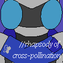
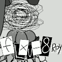
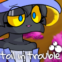

| Peaceful&Purgatory: live life in the moments given to you. | ||
|---|---|---|
|
Genre: Visual Novel
Status: In Development (Demo Available) Released: April 1st, 2022 An unapologetic, self-indulgent visual novel featuring my various D&D characters. Can you find love and happiness in a land where everyone has accepted a life of mundanity? | ||
| TENDER FRAME COCOON: //rhapsody of cross-pollination | ||
|---|---|---|
| 
Genre: Visual Novel
Status: Complete Released: April 1st, 2023 Deidamia Leonte has crash-landed on a desert planet... alongside the leader of the warring faction's elite cell.
The newest chapter in the long-running TENDER FRAME franchise is here. | ||
| flxu_8.rpy | ||
|---|---|---|
| 
Genre: Visual Novel
Released: June 30th, 2024 <!--note to self: write a better description for this shit before you upload it, lol-->
an unfinished story about unfinished stories. ...haven't we heard this song and dance before? let's hope something changes before it's too late.
| ||
| toil in trouble | ||
|---|---|---|
| 
Genre: Visual Novel
Status: Complete Released: September 30th, 2024 It's Sabine Toil's first day of college. Taking after her sister, she's studying to become a witch. She's eager to learn, hopeful to make friends...
...and oh, so very naïve. | ||